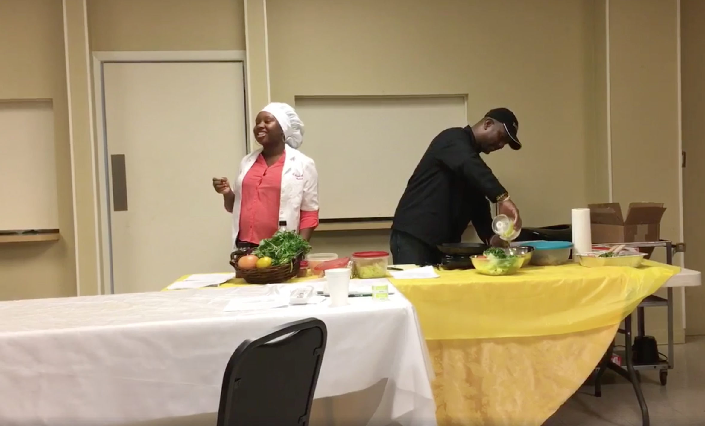

April 2018 Summary
|
Following the opening prayers, we recognized a minute of silence in honor of the late Consul General Colin Mayers.
REMINDERS: |
 April's monthly meeting special food demonstration |


Some Bajan trivia - 'How well do you remember'
By: Marjorie McCauley, a CFL Bajan
Can you remember these aspects of old Barbados?
The former name for a district hospital?
Answer: almshouse
What we used to call a toilet?
Answer: chamber
What was the previous name of the Sir Grantley Adams International Airport?
Answer: Seawell
The name for a straw hat worn by school children years ago.
Answer: Panama hat
Today we say chickens, in the olden days they said ____.
Answer: yard fowl
A stiff undergarment worn by woment in the olden days.
Answer: a can-can
A moveable cupboard used for storing food.
Answer: a larder
The hat once worn by the plantation owners.
Answer: cork hat
'Yuh know, Patsy did always a fair weather friend'. What does that mean?
Answer: She's unreliable person
'Yuh tell me, why would anybody let a 14-year old back back a car?'. What is the 14-year old doing to the car?
Answer: reversing

Bajan trivia by Marjorie McCauley is licensed under a Creative Commons Attribution-NonCommercial-NoDerivatives 4.0 International License.
Because when Bajans hangout, they say the darnest things!
- There are a whole heap of undertakers... yes, but that is a dead business!
Summaries of past meetings
Need to catch up on what happened at a past meeting? Or you wish to re-live the moments? Check out the summaries below.